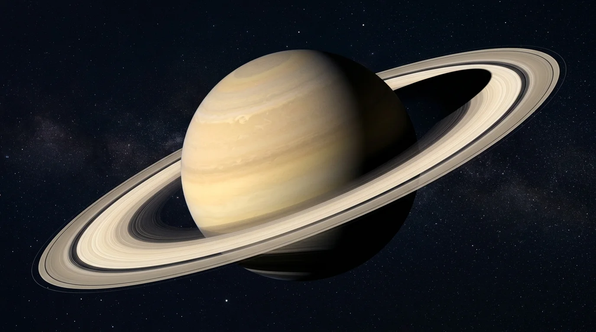

North Polar Hexagon
A persistent 29,000 km-wide six-sided atmospheric jet stream circling Saturn’s north pole, powered by wave patterns in rotating fluid bands.
Solar system voyage · Stop 7 of 10
From afar the rings look solid. Up close, countless separate icy particles follow their own paths around Saturn.
9.58 AU from the Sun · mean distance, rounded
Investigate the sunlight
Spacecraft-inspired view. Images are not a live view; sizes and star positions are not to scale. Select an image to examine it with the class.
Predict first: move twice as far from the Sun. How much light reaches the same area?
distance from the Sun
sunlight per m², compared with Earth
one-way light travel from the Sun
1 AU ≈ 150 million km. Model: sunlight ∝ 1 / distance²; light takes about 8.32 minutes per AU. These are Sun-to-location values, not Earth-to-spacecraft communication times. Atmospheres, temperature, and orbital eccentricity are not modeled. NASA solar system reference · NASA planetary distance table.
Why is a ring not a solid disk attached to Saturn?
Each particle orbits under gravity. Particles at different distances have different orbital speeds; moons and resonances shape the ring structure.
Explain your answer using one observation from the image or lesson and one measurement from the sunlight experiment.
Planet Field Guide · Stop 7 · Gas Giant
Saturn’s gleaming ring system stretches 282,000 kilometers across—nearly three-quarters of the distance from Earth to the Moon—yet averages only about 10 meters thick. Built of billions of orbiting water-ice fragments, Saturn is also the only planet in our solar system with an average density lower than liquid water (0.687 g/cm³).
Driving question: Why do Saturn’s rings stay spread out as billions of icy particles instead of clumping together into one large moon?
Interactive Lab · Roche Limit & Ring Speed
Drag the icy moon inward toward Saturn. Outside the Roche limit (~2.44 Saturn radii for ice), its own gravity holds it together. Cross inside 2.44 RS and Saturn’s tidal pull rips the moon into an orbiting ring whose inner particles race faster than outer ones (v ∝ 1/√r).
Density float check: Saturn’s mean density is 0.687 g/cm³ vs water’s 1.00 g/cm³—less dense than oak wood, meaning Saturn would float in a hypothetical ocean large enough to hold it.
Interior & Ring System
Select each layer to explore Saturn’s core, metallic hydrogen mantle, banded atmosphere, and razor-thin ice rings.
Moons & Storms
A persistent 29,000 km-wide six-sided atmospheric jet stream circling Saturn’s north pole, powered by wave patterns in rotating fluid bands.
Saturn’s largest moon has a thick nitrogen-methane atmosphere and liquid hydrocarbon rivers, rain, and seas at −179 °C.
Cryovolcanic plumes erupting water vapor, salt, and organic molecules from a global ocean beneath Enceladus’s south pole feed Saturn’s E ring.
Spacecraft Exploration
Check Your Understanding
1. Why can’t icy ring particles inside Saturn’s Roche limit merge into a moon?
Choose an answer.
2. Which part of Saturn’s rings orbits faster around the planet?
Choose an answer.